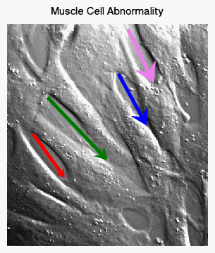

The ARROW function draws an arrow or multiple arrows between points.
Tip: The ARROW function draws arrows from one (X, Y) location to another (X, Y) location, either as an annotation or within the data space. The VECTOR function may be used to draw a vector field or wind field (in arbitrary units) at a series of (X, Y) locations. 
The following code creates an image with four arrows, each with a different color and arrow head size.
im = IMAGE(FILEPATH('muscle.jpg', $
SUBDIRECTORY=['examples','data']), $
TITLE='Muscle Cell Abnormality', $
XRANGE=[0, 400])
xcoord = [[52, 114], [81, 199], [222, 278], [241, 292]]
ycoord = [[224, 138], [297, 173], [344, 242], [433, 327]]
arrows = ARROW(xcoord, ycoord, /DATA, $
COLOR=['red', 'green', 'blue', 'violet'], $
THICK=4, HEAD_SIZE=[1, 1.5, 2, 2.5])
See Annotations Examples for additional examples using the ARROW function.
graphic = ARROW( X , Y, [ , Keywords=value ] [, Properties = variable ])
Keywords are applied only during the initial creation of the graphic.
[, / DATA ] [, / DEVICE ] [, / NORMAL ] [, TARGET = variable ]
Properties can be set as keywords to the function during creation, or retrieved or changed using the "." notation after creation.
Note: Unlike other keywords in IDL, you cannot use an abbreviated form of the property name when setting them during creation. Instead, you must use the full property name.
ANTIALIAS , ARROW_STYLE , CLIP , COLOR , FILL_BACKGROUND , FILL_COLOR , FILL_TRANSPARENCY , HEAD_ANGLE , HEAD_INDENT , HEAD_SIZE , HIDE , LINE_THICK , NAME , THICK , TRANSPARENCY , UVALUE , WINDOW
The ARROW function returns a reference to the created annotation. Use the returned reference to manipulate the annotation after creation by changing properties or by calling methods.
A two-element vector [ xstart , xend ] containing the x-coordinates for the arrow. By default, the coordinates are in normalized units (between 0 and 1). To draw multiple arrows, X can also be set to a 2 x N array, where each two-element row contains the [ xstart , xend ] coordinates for that arrow. In this case, Y should also be set to a 2 x N array.
A two-element vector [ ystart , yend ] containing the y-coordinates for the arrow. By default, the coordinates are in normalized units (between 0 and 1). To draw multiple arrows, Y can also be set to a 2 x N array, where each two-element row contains the [ ystart , yend ] coordinates for that arrow. In this case, X should also be set to a 2 x N array.
Keywords are applied only during the initial creation of the graphic.
Set this keyword to 1 if the input arguments are specified in data coordinates. Setting this keyword inserts the arrow into the data space. Otherwise, the arrow is added to the annotation layer.
Note: If the arrow head extends beyond the data range, the arrow will not be drawn. For double-headed arrows, if either arrow head extends beyond the data range, the arrow will not be drawn.
Set this keyword if the x and y coordinates are specified in device coordinates (pixels).
Set this keyword to 1 if the input arguments are specified in normalized (0, 1) coordinates (this is the default behavior).
If points are specified in data coordinates, set this keyword to the graphic object in which to insert the arrow. By default, the current graphic is used.
By default, anti-aliasing is used when drawing lines. Set this property to 0 to disable anti-aliasing.
Set this property to an integer specifying the style or arrow used. The valid values are:
|
Value |
Arrow Style |
|---|---|
|
1 |
-------> (default) |
|
2 |
<------- |
|
3 |
<------> |
|
4 |
>------> |
|
5 |
<------< |
If you pass an invalid value, the ARROW_STYLE is set to 1 (the default value).
Set this property to 1 to clip portions of the arrow that lie outside of the dataspace range, or to 0 to disable clipping. The default is 1. This property is ignored unless the DATA property is set.
Set this property to a string or RGB vector that specifies the arrow color. The default value is "black". If you are drawing multiple arrows (X and Y are 2 x N arrays) then COLOR can be set to either an N-element string array of color names, or to a 3 x N byte array where each row contains the 3-element RGB color for that arrow. If there are less colors than arrows, then the colors are cyclically repeated. If there is only a single color, then all arrows will have the same color.
Set this property to 1 to fill the arrow (the default behavior). A value of 0 draws the arrow as an outline.
Set this property to a string or RGB vector that specifies the arrow fill color. The default behavior is to match the COLOR property. If you are drawing multiple arrows (X and Y are 2 x N arrays) then FILL_COLOR can be set to either an N-element string array of color names, or to a 3 x N byte array where each row contains the 3-element RGB fill color for that arrow. If there are less colors than arrows, then the colors are cyclically repeated. If there is only a single fill color, then all arrows will have the same fill color.
Note: If you set the FILL_COLOR property to a scalar number (with any value), then the FILL_COLOR will be reset so that it again matches the COLOR property.
Set this property to an integer between 0 and 100 that specifies the percent transparency of the arrow interior.
The default value is the same as the TRANSPARENCY property value.
Set this property to a floating-point value between 0 and 90 that specifies the angle (in degrees) between the arrowhead and the shaft. The default value is 30.
Set this property to a floating-point value between -1 and 1 that specifies the indentation of the back of the arrowhead along the shaft.
A value of 0 gives a triangular shape. A value of 1 draws an arrowhead composed of two lines. A value of -1 creates a diamond-shaped arrowhead. The default value is 0.4.
Set this property to a floating-point factor used to scale the arrow heads. The default value is 1. If you are drawing multiple arrows (X and Y are 2 x N arrays) then HEAD_SIZE can be set to an array of head sizes. If there are less elements than arrows, then the head sizes are cyclically repeated. If there is only a single HEAD_SIZE value, then all arrows will have the same head size.
Set this property to 1 to hide the arrow. A value of 0 reveals the arrow (the default behavior).
Set this property to a value between 0 and 10 specifying the thickness of the arrow outline. The default value is 1.
Set this property to a string that specifies the name of the graphic. The name can be used to retrieve the graphic using the bracket array notation. If NAME is not set, IDL assigns a name based on the graphic type.
Set this property to a floating-point value between 1 and 10 that specifies the thickness of the arrow shaft. The default value is 1. If you are drawing multiple arrows (X and Y are 2 x N arrays) then THICK can be set to an array of thicknesses. If there are less elements than arrows, then the thickness values are cyclically repeated. If there is only a single THICK value, then all arrows will have the same thickness.
Set this property to an integer between 0 and 100 that specifies the percent transparency of the arrow. The default value is 0.
Set this property to an IDL variable of any data type.
This property retrieves a reference to the WINDOW object which contains the graphic.
| 8.0.1 | Introduced |
| 8.1 |
Added the following properties: UVALUE. The LINE_THICK property was changed to accept a value between 0 and 10. Added the following methods: Delete, GetData, SetData. |
| 8.2 | Added support for multiple arrows to the X and Y arguments, and to COLOR, FILL_COLOR, HEAD_SIZE, THICK. |